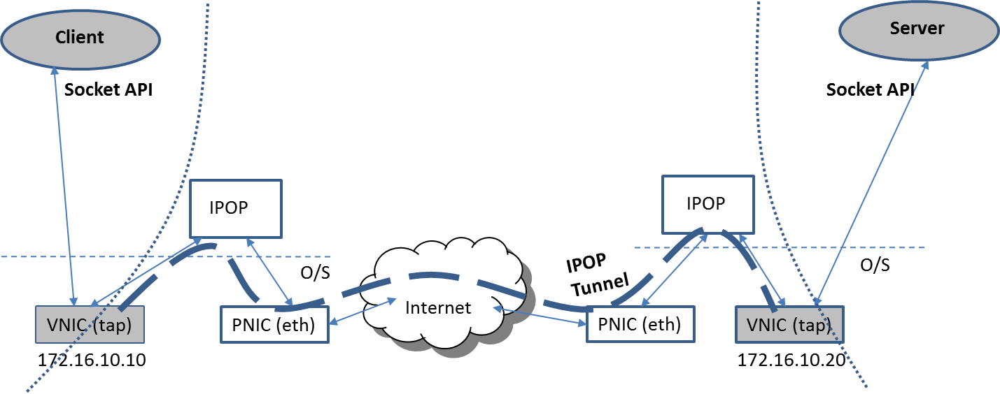

IPOP Architecture
Tincan
The Tincan link is the core communication abstraction used by IPOP to create tunnels. The name comes from an analogy with tin can phones – a popular children’s toy where two cans are connected by a string, creating an ad-hoc link for communication between two friends.
In IPOP, Tincan links are bi-directional communication channels that connect user devices end-to-end to other trusted user devices, where trust is derived from an online social network (OSN) service. Instead of carrying voice like a tin can phone, IPOP Tincan links carry tunneled IP packets (IPv4 or IPv6) – and since version 15.01, also Ethernet frames in IPOP’s “switch mode”. Packets are intercepted by virtual network interfaces (tap) and then tunneled by IPOP through Tincan links; at the destination, they are injected again into a virtual network interface. This allows existing applications to work unmodified when running over an IPOP virtual network, as depicted in the figure.

IPOP’s implementation of Tincan links leverages extensively the libjingle open-source code, which is widely used and can run on a variety of platforms. The IPOP-Tincan module in the source code is primarily responsible for the creation, management, and tear-down of individual Tincan links with peers. This is done under coordination of IPOP’s controller module; controller and Tincan are decoupled modules that communicate through an API layered upon local host sockets, allowing flexibility in the design and facilitating the development of new IPOP-based VPNs.
For instance, the GroupVPN controller is based on group memberships; it creates Tincan links to any online node that belongs to the group, and establishes a flat virtual IP address subnet for nodes in the group, with the purpose of creating virtual private clusters. A different controller for a different purpose – the SocialVPN – uses the same underlying primitives, but creates Tincan links to devices of the local user’s individual friends, and implements dynamic address assignment and translation to allow it to scale to large social networks.
Controllers
The Tincan-based IPOP architecture supports different controllers to implement different virtual networks.
There are two controllers under active development – GroupVPN and SocialVPN. These are both social-based virtual private networks, but with different use cases and controller implementations. In SocialVPN, social relationships have an individual perspective: relationships are independently managed by each individual, and VPN links are friend-to-friend. In GroupVPN, social relationships have a group perspective: there is the concept of a group leader or manager, and once a user joins a group, VPN links are established among all devices that belong to the group.
SocialVPN – this is a controller for the creation of virtual private networks connecting an Internet user’s to their friend’s devices. Each user has its own view of a personal IPv4 virtual address space, and devices of friends are mapped to this address space dynamically.
GroupVPN – this is a controller for the creation of clusters where machines belonging to the cluster’s group are able to communicate to all other machines under a private virtual address space subnet (e.g. 10.10.x.y/16) that is not translated. Example use cases include user-defined virtual private clusters, inter-cloud computing, and virtual LANs for gaming.
Since version 15.01, IPOP GroupVPN can also be executed in “switch mode”, allowing it to handle Ethernet frames as a virtual layer-2 switch. Use case scenarios of switch mode include support for Linux container virtual networks (where multiple container endpoints can be bound to a single IPOP instance through a bridge), and GroupVP on OpenWRT-enabled wireless routers allowing multiple devices across multiple LANs to connect to each other without the need to run GroupVPN software on each device.
From a technical standpoint, the main difference between the two controllers is with respect to the allocation and translation of IPv4 address spaces. SocialVPN assigns and translates private IPv4 subnets and addresses dynamically between any two users/nodes such that it can scale to large numbers of users of online social networks without creating address conflicts. GroupVPN assigns a single private subnet to a group of user/nodes, and does not perform any address translation.
Controller-Tincan API
Controller-Tincan API - IPOP Wiki
XMPP/OSN Bindings
In order to create a user-defined virtual network, it is necessary for users to establish who they want to link with in their virtual network, and to configure and deploy IPOP software on their devices. The figure illustrates the process for users to establish relationships, and how IPOP controllers utilizes XMPP infrastructure to establish Tincan links. This is done through an online social network interface – independently from using IPOP.
In the typical case, a user creates and authenticates himself/herself to an account in an online social network (OSN) server; this could be a public service (e.g. Google hangout), or a private service (e.g. a private ejabberd server), through a Web interface or XMPP client (e.g. Pidgin). The user establishes relationships with other users they wish to connect to through the OSN (e.g. with friend requests). These can be peer-to-peer (e.g. in IPOP’s SocialVPN), or based on groups (e.g. in IPOP’s GroupVPN). Currently, IPOP supports the XMPP protocol to query OSN relationships, and to send messages to online peers. In the figure, Alice and Bob become friends with each other to run SocialVPN. Carol creates a group, and David joins that group.

The IPOP software typically runs on a user’s personal computer, smartphone, or on virtual machines deployed on cloud resources. Once peer relationships are established through an OSN server, a local configuration file at each IPOP endpoint points to the OSN server, and the user (or system administrator) simply executes the IPOP software on the resources that are to be connected to the virtual network, as depicted below. IPOP then automatically installs and configures the local VNIC, and creates end-to-end tunnels connecting to VNICs of peers determined by the OSN.
Because we use an open protocol (XMPP), it is relatively easy for you to deploy your own private XMPP service by using the open-source ejabberd software. In conjunction with deployment of your own STUN/TURN NAT traversal services, you have the option of running IPOP virtual networks that are completely under your control – in other words, the VPN links are peer-to-peer, but their configuration can be managed by centralized services.

NAT Traversal
One of the key aspects of IPOP that enables it to transparently tunnel traffic between endpoint devices is its ability to traverse NATs. This is very important as IPv4 address space exhaustion, and desire for private address spaces as a line-of-defense against attacks have contributed to the proliferation of NAT devices in personal and enterprise networks. NATs complicate the process of creating end-to-end VPN tunnels, as resources behind distinct NATs are not directly addressable by each other.

IPOP leverages the libjingle library to perform NAT traversal in two major ways: IPOP leverages STUN/TURN protocols to discover their NAT endpoints and create tunnels directly with peers. STUN is employed, when possible, to discover network endpoints and punch “holes” in “cone-type” NATs and allow direct communication between endpoints through the NATs. When STUN fails (e.g. with symmetric NATs), TURN is used to select an intermediary relay node, and traffic between endpoints is routed through the TURN relay. The selection of a tunneling approach is managed autonomously by IPOP in a way that is completely transparent to applications — users are not aware whether a direct connection is a STUN- or TURN-mediated IPOP-Tincan link. IPOP allows you to specify multiple STUN/TURN services through configuration.
There are public STUN/TURN traversal services available in the Internet; we run a STUN/TURN node for demonstration purposes. You can also deploy your own STUN/TURN server(s) for your own dedicated use. Check out also the documentation on deploying your own STUN and TURN NAT traversal services.
Videos
Series of Video Lectures on IPOP’s Architecture and Design
Controllers
GroupVPN
GroupVPN is an IPOP controller for virtual private network tailored to use cases where you want to bring together groups of machines into a virtual network that is logically connected all-to-all. With the GroupVPN controller, machines that join a group are assigned virtual addresses within an IP subnet, each node has connectivity to all other nodes in the group, and IP addresses are not translated. GroupVPN also supports a “switch mode” where Ethernet frames are tunneled, and IPOP behaves as a virtual L2 switch. These are some of the ways you can use GroupVPN:
Multi-cloud computing
GroupVPN allows you to connect virtual machines across multiple cloud providers (private or commercial) for enhanced fault tolerance content distribution. You do not need any support from the cloud provider to run GroupVPN – all you need is a VM!
Collaborative environments
GroupVPN allows you to create virtual private networks that span across multiple sites that need to collaborate – e.g. universities, branches and roaming workers in small/medium businesses. It is easy to setup and automatically traverses NATs/firewalls.
Virtual LANs for gaming
GroupVPN allows gamers to create virtual networks connecting them together for multi-player gaming. In the typical configuration, GroupVPN runs on end devices (e.g. a PC), but it’s also possible to run GroupVPN on OpenWRT routers to connect all devices of a LAN to a GroupVPN.
SocialVPN
SocialVPN is an open-source IPOP-based virtual network that connects your computers privately to your friends’ computers. It automatically maps online social network relationships using Jingle and XMPP to create your own user-defined peer-to-peer VPNs – with no hassle, and supporting unmodified TCP/IP applications. In the SocialVPN, each user is in control of who their VPN connects to. To scale to large online social networks, SocialVPN employs a unique dynamic IPv4 address allocation/translation approach that avoids conflicts with local networks and devices outside a user’s social network. These are some of the ways you can use SocialVPN:
Private data sharing
SocialVPN allows you to create private, end-to-end virtual IP networks connecting you to your friends. You can use these links to privately share data with your friends, using existing applications for file transfer and sharing.
Mobile cloud computing
SocialVPN runs on Android devices and allows users to create VPNs connecting mobile devices as well as desktops, laptops and servers. It provides a basis for research and development on “social area networks” for data sharing and computational offloading.
Decentralized OSNs
SocialVPN creates a communication overlay that can be used as a basis to design decentralized Online Social Networks (OSNs).
Publications
Help IPOP continue to be a successful project by making sure that, if you use IPOP-Tincan code in your research, you reference the project’s web site (ipop-project.org) and the following articles in your publications:
Pierre St Juste, Kyuho Jeong, Heungsik Eom, Corey Baker, Renato Figueiredo, ‘Tincan: User-Defined P2P Virtual Network Overlays for Ad-hoc Collaboration’, ICST Transactions on Collaborative Computing, Volume 14 Issue 2, 08/2014
Arijit Ganguly, Abhishek Agrawal, P. Oscar Boykin and Renato Figueiredo. ‘IP over P2P: Enabling Self-Configuring Virtual IP Networks for Grid Computing’. In Proceedings of the 20th IEEE International Parallel and Distributed Processing Symposium (IPDPS). Rhodes Island, Greece, 2006.
IPOP-Tincan publications
Razavi, K, Ion, A, Tato, G, Jeong, K, Figueiredo, RJ, Pierre, G, Kielmann, T, “Kangaroo: A Tenant-Centric Software-Defined Cloud Infrastructure”, IEEE International Conference on Cloud Engineering (IC2E), 2015
Pierre St Juste, Kyuho Jeong, Heungsik Eom, Corey Baker, Renato Figueiredo, ‘Tincan: User-Defined P2P Virtual Network Overlays for Ad-hoc Collaboration‘, ICST Transactions on Collaborative Computing, Volume 14 Issue 2, 08/2014
IPOP-Brunet publications
David I Wolinsky, Pierre St. Juste, Oscar Boykin, and Renato Figueiredo, ‘Addressing the P2P Bootstrap Problem for Small Overlay Networks’, In the Proceedings of the 10th IEEE International Conference on Peer-to-Peer Computing 2010 (P2P’10), 08/2010.
David Isaac Wolinsky, Yonggang Liu, Pierre St. Juste, Girish Venkatasubramanian, Renato Figueiredo. ‘On the Design of Scalable, Self-Configuring Virtual Networks’. In Proceedings of SuperComputing ’09 (SC), 11/2009.
David Wolinsky, Yonggang Liu, Renato Figueiredo. ‘Towards a Uniform Self-Configuring Virtual Private Network for Workstations and Clusters in Grid Computing’. In Proceedings of Virtualization Technologies in Distributed Computing (VTDC). 06/2009.
Arijit Ganguly, David Wolinsky, P. Oscar Boykin, Renato Figueiredo. ‘Improving Peer Connectivity in Wide-area Overlays of Virtual Workstations’. In Proceedings of IEEE High Performance Distributed Computing (HPDC). Best paper award, 06/2008
Arijit Ganguly, David Wolinsky, P. Oscar Boykin, Renato Figueiredo. ‘Decentralized Dynamic Host Configuration in Wide-Area Overlay Networks of Virtual Workstations’. In Proceedings of Large-Scale and Volatile Desktop Grids (PCGrid), 03/2007
Arijit Ganguly, Abhishek Agrawal, P. Oscar Boykin, Renato Figueiredo. ‘WOW: Self-Organizing Wide Area Overlay Networks of Virtual Workstations”. In Proceedings of the 15th IEEE International Symposium on High Performance Distributed Computing (HPDC), pages 30-41, 2006.
Arijit Ganguly, Abhishek Agrawal, P. Oscar Boykin and Renato Figueiredo. ‘IP over P2P: Enabling Self-Configuring Virtual IP Networks for Grid Computing’. In Proceedings of the 20th IEEE International Parallel and Distributed Processing Symposium (IPDPS). Rhodes Island, Greece, 2006.